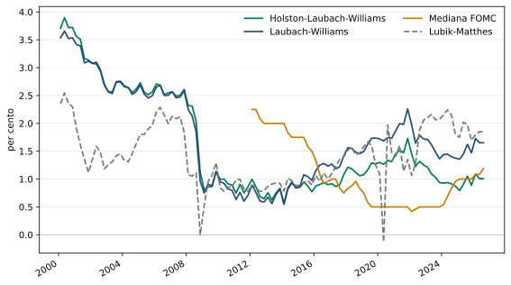
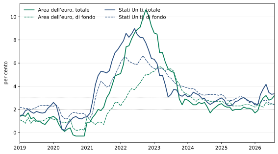
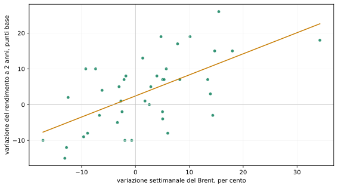
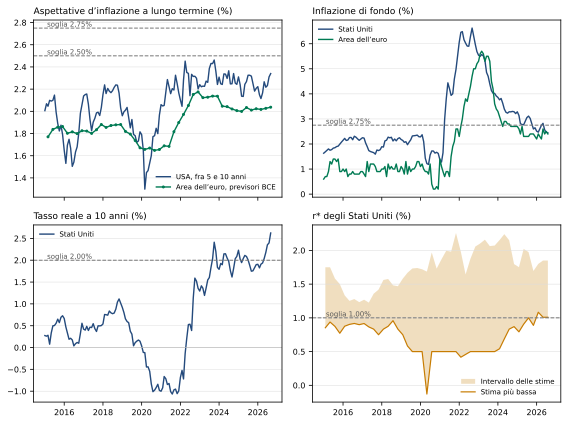
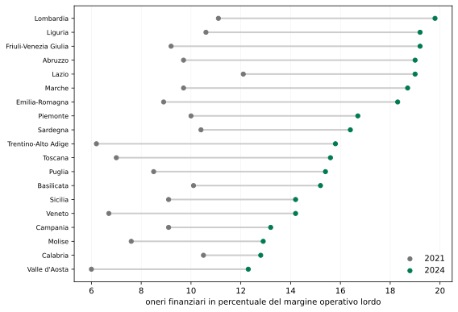

Il 3% come nuovo parametro di riferimento?
Tassi più alti e inflazione persistente: uno scenario da verificare
Paolo Volterra ![]()
Italiano. Questa nota propone un’ipotesi: il 3% come nuovo parametro di riferimento, in due sensi collegati. È un parametro plausibile ma non vincolante, proposto come provocazione per riaprire il confronto fra il consolidato obiettivo simmetrico del 2% e le teorie alternative, alla luce di un mondo con molti più attori economici in competizione. Il costo del denaro di riferimento non tornerebbe vicino allo zero ma si collocherebbe intorno al 3% o più, perché la crescita della produttività globale, spinta dagli investimenti in intelligenza artificiale, alza il tasso reale neutrale. L’inflazione si assesterebbe intorno al 3% anziché al 2%, perché il riassetto dell’ordine economico mondiale, con la competizione per la leadership e i conflitti che ne derivano, rende più frequenti gli shock d’offerta su energia e materie prime. I dati del 2026 sostengono la prima gamba: le stime di r* implicano un tasso nominale neutrale fra il 3% e il 4%, e FMI e OCSE indicano tassi ufficiali e neutrali più alti del passato. La seconda gamba descrive bene il livello attuale dell’inflazione, ma le previsioni ufficiali indicano un ritorno verso il 2%. Quelle previsioni sono però condizionate a ipotesi di normalizzazione, come la fine rapida del conflitto e il calo dei prezzi dell’energia indicato dai mercati futures. La nota formula quindi il 3% come scenario condizionato e propone criteri osservabili per stabilire, nei prossimi trimestri, se il regime è cambiato: aspettative d’inflazione a lungo termine, inflazione di fondo, tassi reali a lungo termine, stime di r* e ricorrenza degli shock energetici. Oggi è oltre la soglia proposta solo il tasso reale a lungo termine statunitense, mentre la stima più bassa di r* è sostanzialmente sulla soglia; l’evidenza a favore della prima gamba è più forte negli Stati Uniti che nell’area dell’euro; le soglie formano una griglia di monitoraggio, non un test conclusivo. Dati aggiornati al 1° ottobre 2026.
English. This note puts forward a hypothesis: 3 per cent as the new reference parameter, in two linked senses. It is a plausible but non-binding parameter, put forward as a provocation to reopen the debate between the established 2 per cent target and alternative frameworks, in a world with many more competing economic actors. The benchmark cost of money would not return to near zero but would settle around 3 per cent or higher, because faster global productivity growth, driven by investment in artificial intelligence, raises the neutral real rate. Inflation would settle around 3 rather than 2 per cent, because the reshaping of the world economic order, with competition for leadership and the conflicts it generates, makes supply shocks to energy and commodities more frequent. 2026 data support the first leg: estimates of r* imply a nominal neutral rate between 3 and 4 per cent, and the IMF and OECD point to higher policy and neutral rates than in the past. The second leg describes the current level of inflation well, but official forecasts show a return towards 2 per cent. Those forecasts, however, are conditional on normalisation assumptions, such as a quick end to the conflict and the decline in energy prices implied by futures markets. The note therefore frames 3 per cent as a conditional scenario and proposes observable criteria for judging, over the coming quarters, whether the regime has changed: long-term inflation expectations, core inflation, long-term real rates, estimates of r* and the recurrence of energy shocks. Today only the US long-term real rate is above its proposed threshold, while the lowest estimate of r* sits essentially on the threshold; the evidence for the first leg is stronger in the United States than in the euro area; the thresholds form a monitoring grid, not a conclusive test. Data updated to 1 October 2026.
tasso naturale, r-star, inflazione, frammentazione geoeconomica, energia, produttività, intelligenza artificiale, cambiamento di regime
Versione citabile su Zenodo, con il PDF: doi.org/10.5281/zenodo.23086513.
1 L’ipotesi
Il riferimento consolidato è il 2% simmetrico. Dal 2021 la BCE definisce la stabilità dei prezzi come un’inflazione del 2% nel medio termine e considera ugualmente indesiderabili le deviazioni verso l’alto e verso il basso; il riesame della strategia del 2025 lo ha confermato [1]. Anche la Federal Reserve persegue un obiettivo di lungo periodo del 2% e, con la revisione del 2025, ha abbandonato la formula dell’obiettivo medio adottata nel 2020 [2]. L’ipotesi di questa nota è che il nuovo contesto, con più attori economici in competizione e shock d’offerta più frequenti, possa comportare tassi nominali di equilibrio più elevati e un’inflazione più persistente. Si valuta quindi il 3% come riferimento di scenario, senza assumerlo come obiettivo monetario preferibile; livello e simmetria dell’obiettivo restano scelte distinte, e anche un obiettivo del 3% potrebbe essere simmetrico. Il 3% è inteso in due sensi collegati.
Il costo del denaro. Il tasso ufficiale «normale», quello che non frena né spinge l’economia, si collocherebbe intorno al 3% o più, perché la crescita della produttività globale alza il rendimento del capitale e quindi il tasso reale neutrale r*.
L’inflazione. L’inflazione si assesterebbe intorno al 3% anziché al 2%, perché il riassetto dell’ordine economico mondiale rende più frequenti gli shock d’offerta su energia e materie prime.
Il 3% del titolo è una sintesi comunicativa, non una previsione puntuale: un parametro plausibile ma non vincolante, proposto come provocazione per riaprire il confronto fra il consolidato obiettivo simmetrico del 2% e le teorie alternative che lo superano, alla luce di cambiamenti geopolitici che hanno moltiplicato gli attori economici in competizione. Le due gambe arrivano allo stesso numero per strade diverse e vanno tenute distinte: la prima riguarda il prezzo reale del capitale, la seconda il livello dei prezzi. Il legame fra le due è nella formula che definisce il tasso nominale neutrale:
\[i^* \approx r^* + \pi^e.\]
In parole semplici: il costo del denaro «normale» è la somma del rendimento reale di equilibrio e dell’inflazione attesa. Con r* all’1% e inflazione al 2% il tasso nominale neutrale è vicino al 3%; con r* all’1% e inflazione al 3%, o con r* al 2% e inflazione al 2%, sale verso il 4%.
Che le due gambe arrivino allo stesso numero non è una legge: è una coincidenza di questa fase. Con r* all’1% e inflazione al 3%, il costo del denaro «normale» sarebbe vicino al 4%, non al 3%. Il 3% di questa nota non va confuso nemmeno con il valore di riferimento del 3% per il disavanzo pubblico europeo, che ha un’origine e una funzione diverse e viene ripreso solo nell’ultima parte.
L’ipotesi è formulata come scenario condizionato: descrive che cosa accadrebbe se produttività e shock d’offerta restassero sul percorso osservato nel 2026, e propone criteri osservabili per stabilire, nei prossimi trimestri, se ciò stia accadendo. Un solo anno di dati e alcune correlazioni non bastano per affermare che il regime sia cambiato.
2 Prima gamba: produttività e costo del capitale
Nella teoria della crescita il tasso reale di equilibrio è legato al rendimento marginale del capitale, anche se nei dati il legame fra r* e crescita è più debole di quanto la teoria suggerisca [3]: se la produttività accelera, aumentano le opportunità di investimento, la domanda di capitale cresce e con essa il tasso reale che rende risparmio e investimento compatibili [4]. L’ipotesi sostenuta qui è che gli investimenti in intelligenza artificiale avviino una fase di questo tipo. La Banca Mondiale stima che l’adozione dell’intelligenza artificiale, anche se deludesse le attese più ottimistiche, porterebbe la crescita della produttività globale sopra la media degli anni Venti [5]. L’OCSE registra nel 2026 una forte attività legata all’intelligenza artificiale, che ha compensato in parte gli effetti del conflitto in Medio Oriente, e osserva che il rialzo dei tassi reali attesi di lungo periodo solleva la questione se i tassi neutrali siano più alti di quanto si ritenesse [6]. La BIS collega esplicitamente una produttività più alta a un prodotto marginale del capitale e a un r* più elevati [7].
I numeri sono già vicini all’ipotesi. Le cinque stime di r* raccolte dalla Federal Reserve di Atlanta per il terzo trimestre del 2026 vanno dall’1,01% all’1,85% [8]: con un’inflazione al 2% implicano un tasso nominale neutrale fra il 3,0% e il 3,85%. Il Fondo monetario internazionale prevede che il tasso sui fondi federali raggiunga un livello finale di circa il 3,1% alla fine del 2027 [9], e un suo modello che usa anche i tassi di mercato stima un r* statunitense salito all’1,5% dopo la pandemia [10].

Figura 1: Quattro delle cinque stime del tasso reale neutrale r* per gli Stati Uniti raccolte dalla Federal Reserve di Atlanta, valori trimestrali
Fonte: elaborazioni su Federal Reserve Bank of Atlanta, Taylor Rule Utility, versione del 30 settembre 2026 [8]. La quinta stima, la tendenza centrale delle proiezioni del FOMC (1,29% nel terzo trimestre 2026), è vicina alla mediana e non è riportata.
In parole semplici: dopo il 2021 le stime si separano; quelle che incorporano le aspettative di mercato e dei banchieri centrali salgono, quella Holston–Laubach–Williams, che usa dati macroeconomici e tassi osservati senza ricorrere direttamente alla curva dei rendimenti, scende. Tutte, combinate con un’inflazione al 2%, portano il costo del denaro «normale» intorno o sopra il 3%.
Gli argomenti contrari sono noti. Le stime di r* sono imprecise [11], il legame fra r* e crescita è più debole di quanto spesso si assuma [3] e i guadagni di produttività dell’intelligenza artificiale restano incerti, con il rischio di sovrainvestimento [12]. Parte del finanziamento è inoltre circolare: fra il 2021 e il 2025 il 55,2% degli investimenti ricevuti dalle imprese dell’intelligenza artificiale proveniva da altre imprese dello stesso settore, spesso legate da rapporti di fornitura, con rischi macroeconomici e minore trasparenza [13].
Un’obiezione riguarda la coerenza fra le due gambe: un aumento di produttività è uno shock d’offerta positivo, che di per sé fa scendere i prezzi, mentre la seconda gamba richiede shock d’offerta negativi. La contraddizione è solo apparente. Secondo un modello della BIS, se imprese e famiglie non anticipano i guadagni di produttività dell’intelligenza artificiale l’effetto iniziale è disinflazionistico, ma nel tempo la maggiore domanda di investimento e di consumo produce un’inflazione moderata; se li anticipano, l’inflazione sale subito [14]. Nella fase di investimento, quella in corso, la prima gamba può quindi sommarsi alla seconda invece di compensarla.
Un terzo canale spinge nella stessa direzione della produttività: il fabbisogno pubblico. Negli Stati Uniti un punto di PIL in più di disavanzo previsto è associato a un aumento di circa 25 punti base dei tassi a termine a lunga scadenza [15], e studi più recenti confermano un effetto positivo del debito sui tassi, di entità variabile secondo il metodo [16], [17]. Un costo del denaro più alto può quindi riflettere anche un maggiore assorbimento di risparmio da parte degli Stati, non solo una maggiore produttività.
La prima gamba, infine, è più debole in Europa. Le stime di r* per l’area dell’euro sono più basse di quelle statunitensi: una stima basata sui titoli indicizzati all’inflazione lo trova sceso di circa due punti dal 2002 e ancora negativo alla fine del campione [18], mentre il modello del Fondo monetario che usa i tassi di mercato lo stima salito da circa −3,5% a 0,5% dopo la pandemia [10]. Con un’inflazione al 2%, il costo del denaro «normale» nell’area dell’euro andrebbe quindi da poco meno del 2% al 2,5%, sotto il 3%.
3 Seconda gamba: riassetto geopolitico, energia e inflazione
La seconda gamba parte da un’interpretazione geopolitica: l’emergere di molti più attori economici in competizione mette in discussione la posizione degli Stati Uniti, la competizione per il riassetto dell’ordine mondiale accresce i conflitti, i conflitti producono shock su energia e materie prime. È un’interpretazione, non un risultato: i dati economici non possono dimostrarne le cause, possono però verificarne le conseguenze. La letteratura istituzionale sulla frammentazione geoeconomica arriva per altra via a una conclusione compatibile: un’economia mondiale divisa in blocchi sarebbe esposta a shock d’offerta più ampi e più frequenti, con maggiore volatilità di prodotto e inflazione, perché la frammentazione delle catene di fornitura riduce la capacità di assorbirli [19], [20]. In uno scenario estremo di barriere generalizzate fra blocchi, la BCE stima un aumento dell’inflazione mondiale di 4 punti nel primo anno, con effetti che durano almeno cinque anni [19]. Il Fondo monetario indica la frammentazione geoeconomica fra i fattori che pesano sulla crescita di medio periodo [9].
Shock d’offerta più frequenti, però, non portano da soli a un’inflazione media stabilmente più alta: possono anche produrre soltanto un’inflazione più volatile, con scostamenti dall’obiettivo in entrambe le direzioni, come prevede la BCE [1]. Perché la media salga servono altri passaggi: che gli shock lascino effetti persistenti sui prezzi, che si trasmettano a salari e margini con effetti di secondo impatto, che le aspettative d’inflazione si spostino verso l’alto e che la banca centrale scelga di non contrastare del tutto ogni deviazione. La BIS avverte che anche shock d’offerta temporanei possono innescare effetti di secondo impatto e un’inflazione persistente [21]. È su questi passaggi, più che sul numero degli shock, che si gioca la seconda gamba.
Il 2026 ha offerto un caso concreto. Con il conflitto in Medio Oriente il prezzo del Brent è passato da 61 dollari al barile a fine 2025 a un massimo di 138 dollari in aprile ed era a 114 dollari a fine settembre [22]; la Banca Mondiale prevede una media di 94 dollari per l’anno, il 36% in più del 2025 [5]. L’inflazione ne ha seguito il percorso.

Figura 2: Inflazione totale e di fondo nell’area dell’euro e negli Stati Uniti, variazione sui dodici mesi
Fonte: elaborazioni su Eurostat, indice armonizzato dei prezzi al consumo (classificazione COICOP 2018), e Federal Reserve Bank of St. Louis, indice dei prezzi al consumo [22], [23]. L’inflazione di fondo esclude energia e alimentari.
In parole semplici: dopo lo shock del 2022 l’inflazione era tornata vicina al 2%; nel 2026 l’energia l’ha riportata intorno al 3% in entrambe le aree. Ad agosto l’inflazione totale era al 3,2% nell’area dell’euro e al 3,35% negli Stati Uniti, mentre quella di fondo era al 2,4% e al 2,45% [22], [23].
La scomposizione del rialzo del 2026 mostra che cosa si è mosso. Fra la fine del 2025 e la fine di settembre 2026 il rendimento del Treasury decennale è salito di 108 punti base: 98 nella componente reale e 11 nell’inflazione attesa implicita nei prezzi di mercato [22]. La ripartizione del rialzo nominale fra tassi brevi attesi e premio a termine dipende invece dal modello: il premio a termine è salito di circa 45 punti base secondo la stima di Kim e Wright e di 2 punti base secondo il modello Adrian–Crump–Moench, misurato fino al 25 settembre [24], [25]. Il rialzo, quindi, non viene dalle aspettative d’inflazione di lungo periodo, coerentemente con il fatto che la seconda gamba non è ancora confermata.
Lo shock energetico si è trasmesso anche ai tassi. Nel 2026, settimana per settimana, le variazioni del prezzo del petrolio si sono mosse insieme a quelle del rendimento a due anni, delle aspettative d’inflazione a cinque anni e del premio a termine, con correlazioni intorno a 0,6; molto meno con le aspettative d’inflazione fra cinque e dieci anni.

Figura 3: Stati Uniti, 2026: variazioni settimanali del prezzo del Brent e del rendimento del Treasury a due anni
Fonte: elaborazioni su Federal Reserve Bank of St. Louis [22]. Ogni punto è una settimana del 2026; la retta è la regressione lineare.
In parole semplici: nelle settimane in cui il petrolio è salito, il mercato si è atteso tassi ufficiali più alti. Un aumento del 10% del Brent in una settimana si è accompagnato in media a circa 6 punti base in più sul rendimento a due anni. È una correlazione, non la prova di un nesso causale, ma è coerente con l’idea che gli shock energetici passino attraverso la reazione attesa delle banche centrali.
4 L’ipotesi alla prova dei dati
| Gamba | Elementi a favore | Elementi contrari |
|---|---|---|
| Costo del denaro intorno al 3% | Stime di r* fra l’1,0% e l’1,85%, quindi tasso nominale neutrale fra il 3,0% e il 3,85% con inflazione al 2% [8]; tasso finale della Fed previsto dal FMI intorno al 3,1% [9]; OCSE: i tassi neutrali potrebbero essere più alti di quanto si ritenesse [6]; r* da modello con dati di mercato all’1,5% [10] | Stima Holston–Laubach–Williams in calo dall’1,33% all’1,01% dal 2020 [26]; stime molto imprecise [11]; scomposizione del rialzo dei rendimenti dipendente dal modello [24], [25] |
| Inflazione intorno al 3% | Inflazione totale al 3,2% nell’area dell’euro e al 3,35% negli Stati Uniti ad agosto 2026 [22], [23]; OCSE: inflazione nell’area dell’euro al 3,0% nel 2026 e al 2,9% nel 2027, con quella di fondo in salita al 2,6% [6]; FMI: disinflazione interrotta [27]; frammentazione con shock d’offerta più frequenti [19], [20] | BCE: inflazione al 2,5% nel 2027 e al 2,1% nel 2028 [28]; aspettative d’inflazione statunitensi fra cinque e dieci anni al 2,36%, vicine alla media del 2010-2019 [22]; inflazione di fondo fra il 2,4% e il 2,5%; FMI: poche tracce di disancoraggio delle aspettative [27] |
Tabella 1: L’ipotesi del 3% alla prova delle evidenze disponibili
La prima gamba regge meglio della seconda. Un costo del denaro intorno al 3% è già compatibile con le stime di r* e con le previsioni del FMI; non richiede di ipotizzare un mondo diverso, ma solo di prendere atto che il tasso reale di equilibrio non è tornato ai livelli del decennio scorso. La seconda gamba descrive bene il livello attuale dell’inflazione, ma le previsioni ufficiali e le aspettative di mercato indicano un ritorno verso il 2%.
C’è inoltre una tensione fra le due gambe. La ragione classica per alzare l’obiettivo d’inflazione al 3% o al 4% è creare spazio per tagliare i tassi nelle recessioni, quando r* è basso [29], [30]. Se la prima gamba è vera e r* sale, quella ragione si indebolisce. Un 3% d’inflazione come riferimento dovrebbe quindi poggiare su un argomento diverso: la frequenza degli shock d’offerta in un mondo frammentato, che rende costoso riportare ogni volta l’inflazione esattamente al 2%.
5 Le teorie alternative al 2%
Il 2% non è l’unica regola studiata. Accanto alla proposta di alzare l’obiettivo, la letteratura ha sviluppato altre strategie, accantonate negli anni della bassa inflazione e che il nuovo contesto rende di nuovo pertinenti.
| Strategia | Idea | Che cosa dice in un mondo di shock d’offerta frequenti |
|---|---|---|
| Obiettivo più alto, al 3–4% | Lasciare più spazio per tagliare i tassi nelle recessioni [29], [32], [33] | La ragione classica si indebolisce se r* sale [30]; resta l’argomento del costo di riportare ogni volta l’inflazione al 2% dopo shock ricorrenti |
| Fascia di tolleranza attorno al 2% | Tollerare scostamenti entro un intervallo invece di mirare a un punto | Una fascia non può essere una zona di inazione: senza reazione al suo interno aumentano instabilità e rischio di equilibri multipli [34] |
| Obiettivo medio | Compensare i periodi sotto l’obiettivo con periodi sopra, in media nel tempo | Adottato dalla Federal Reserve nel 2020 e abbandonato con la revisione del 2025, che è tornata a un obiettivo del 2% non riferito alla media [2] |
| Obiettivo sul livello dei prezzi | Riportare il livello dei prezzi su un sentiero prefissato, recuperando gli scostamenti passati | Rende più prevedibile il livello dei prezzi nel lungo periodo [35], ma dopo uno shock d’offerta impone di recuperare l’eccesso d’inflazione con una fase di inflazione più bassa |
| Indice di stabilizzazione diverso dall’indice dei prezzi al consumo | Stabilizzare l’inflazione dei beni discrezionali, sui quali la politica monetaria agisce, anziché quella complessiva | I beni di necessità, come energia e alimentari, spiegano gran parte della variabilità dell’inflazione ma rispondono poco ai tassi; le regole ottime danno quasi tutto il peso all’inflazione dei beni discrezionali [36] |
| Obiettivo sul PIL nominale | Stabilizzare la crescita del PIL nominale anziché l’inflazione | In un modello con prezzi e salari rigidi supera nettamente l’obiettivo d’inflazione, soprattutto in presenza di shock d’offerta, perché ripartisce l’aggiustamento fra prezzi e quantità [37] |
Tabella 3: Strategie alternative all’obiettivo d’inflazione del 2%
L’ultima alternativa riporta al punto da cui è partito il dibattito, il PIL nominale, ma con un ruolo diverso: non come causa dei tassi più alti, bensì come possibile àncora della politica monetaria in un mondo di shock d’offerta. Le istituzioni, per ora, hanno scelto di conservare il 2% rafforzando le analisi di scenario [1]; il 3% di questa nota serve a ricordare che la scelta non è l’unica possibile e che il suo costo cresce se gli shock diventano più frequenti e più persistenti.
6 Previsioni condizionate alla normalizzazione
Gli elementi contrari alla seconda gamba vengono in buona parte da previsioni che incorporano esplicitamente un ritorno alla normalità. Le previsioni del Fondo monetario di aprile si basano su un conflitto relativamente breve [9]. L’OCSE assume che i prezzi dell’energia scendano come indicato dai mercati futures e che il conflitto si risolva [6]. Le proiezioni della BCE assumono che lo shock d’offerta energetico si attenui gradualmente e prendono le ipotesi su tassi e materie prime dalle quotazioni di mercato [28].
| Istituzione | Previsione | Ipotesi su cui si regge |
|---|---|---|
| FMI, aprile e luglio 2026 | Inflazione mondiale dal 4,7% nel 2026 al 3,9% nel 2027; tasso finale della Fed intorno al 3,1% | Conflitto relativamente breve; aumento dei prezzi dell’energia del 19% nel 2026 |
| OCSE, settembre 2026 | Inflazione nell’area dell’euro al 3,0% nel 2026 e al 2,9% nel 2027 | Prezzi dell’energia in calo come indicato dai futures; risoluzione del conflitto |
| BCE, settembre 2026 | Inflazione nell’area dell’euro al 3,0% nel 2026, al 2,5% nel 2027 e al 2,1% nel 2028 | Attenuazione graduale dello shock energetico; materie prime e tassi dalle quotazioni di mercato |
| Banca Mondiale, giugno 2026 | Brent a 94 dollari nel 2026 e ritorno verso livelli più bassi | Disfunzioni dell’offerta in graduale attenuazione nella seconda metà dell’anno |
Tabella 4: Previsioni ufficiali e ipotesi di normalizzazione
Fonti: [5], [6], [9], [27], [28].
Il problema non è nuovo. Le relazioni stimate in un regime non restano necessariamente valide quando il regime cambia [38]. I modelli macroeconomici usati per stimare r* filtrano dati di prodotto, inflazione e tassi osservati e si adeguano lentamente ai cambiamenti [11], [39]; le previsioni d’inflazione a medio termine assumono che le aspettative restino ancorate e che gli shock si riassorbano. Se la frammentazione rende gli shock d’offerta più frequenti, ogni previsione che assume il loro riassorbimento tenderà a sottostimare l’inflazione media. La stessa BCE riconosce che la frammentazione aumenta la complessità e l’imprevedibilità del contesto in cui operano le banche centrali e richiede strumenti di analisi nuovi [19].
Un ripensamento è già in corso nelle istituzioni, ma è parziale: riguarda metodi e strumenti, non il parametro. Nel riesame della strategia del 2025 la BCE ha confermato l’obiettivo del 2%, ma ha scritto che i cambiamenti strutturali legati a geopolitica, digitalizzazione, intelligenza artificiale e demografia rendono il contesto dell’inflazione incerto e potenzialmente più volatile, con scostamenti più ampi dall’obiettivo in entrambe le direzioni, e ha dato più spazio alle analisi di scenario e di sensibilità [1]. La Banca dei regolamenti internazionali osserva che gli shock d’offerta avversi sono diventati più frequenti e più intensi e che le autorità devono fare i conti con più cambiamenti strutturali insieme [21]. La revisione delle previsioni della Banca d’Inghilterra affidata a Ben Bernanke ha raccomandato di affiancare stabilmente scenari alternativi alla previsione centrale e di sostituire, o almeno rinnovare a fondo, il modello di previsione [40]. Nessuna di queste istituzioni ha proposto di abbandonare l’obiettivo del 2%.
Ne seguono due indicazioni di metodo. Le previsioni ufficiali vanno lette come uno scenario, quello della normalizzazione, e affiancate da scenari di regime con shock ricorrenti. I modelli a cambiamento di regime, che stimano parametri diversi per fasi diverse e la probabilità di passare dall’una all’altra, sono lo strumento naturale per questo esercizio [41]. Gli indicatori da seguire per capire quale scenario si stia realizzando sono la frequenza degli shock energetici, l’inflazione di fondo, le aspettative d’inflazione a lungo termine e le stime di r* che incorporano informazioni di mercato.
7 Come capire se il regime è cambiato
Lo scenario del 3% si può monitorare. La tabella propone, per ciascuna gamba, un indicatore osservabile, una soglia oltre la quale l’evidenza a favore dello scenario aumenta e il valore attuale. Le soglie sono criteri indicativi proposti in questa nota, non valori ufficiali, e formano una griglia di monitoraggio, non un test conclusivo di cambiamento di regime; la durata richiesta serve a distinguere una tendenza da uno shock. Per r* la soglia è fissata in modo coerente con un costo del denaro intorno al 3%: con un’inflazione al 2%, una stima più bassa sopra l’1% implica un tasso nominale neutrale di almeno il 3%.
| Gamba | Indicatore | Soglia | Valore attuale | Media 2010-2019 | Esito |
|---|---|---|---|---|---|
| Inflazione | Aspettative d’inflazione USA fra 5 e 10 anni (media ultimi 3 mesi) | sopra 2,75% per almeno un anno | 2,29% | 2,25% | Non superata |
| Inflazione | Aspettative d’inflazione di lungo periodo area euro (SPF BCE, ultimo trimestre) | sopra 2,5% per almeno un anno | 2,04% | 1,82% | Non superata |
| Inflazione | Inflazione di fondo USA (media ultimi 6 mesi) | sopra 2,75% per almeno quattro trimestri | 2,61% | 1,85% | Vicina, non superata |
| Inflazione | Inflazione di fondo area euro (media ultimi 6 mesi) | sopra 2,75% per almeno quattro trimestri | 2,40% | Non superata | |
| Costo del denaro | Tasso reale a 10 anni USA (media ultimi 3 mesi) | sopra 2% per almeno un anno | 2,44% | 0,42% | Superata da maggio 2026, non ancora per un anno |
| Costo del denaro | r* USA, cinque stime (Atlanta Fed) | stima più bassa sopra 1% | da 1,01% a 1,85% | Sostanzialmente sulla soglia |
Tabella 5: Indicatori per verificare lo scenario del 3%
Fonte: elaborazioni su Federal Reserve Bank of St. Louis, Banca centrale europea (Survey of Professional Forecasters), Eurostat e Federal Reserve Bank of Atlanta [8], [22], [23], [42].
In parole semplici: oggi ha superato la soglia solo il tasso reale a lungo termine statunitense, e da pochi mesi; la stima più bassa di r* (1,009%) è sostanzialmente sulla soglia e, data l’incertezza delle stime, non va contata come conferma; le aspettative d’inflazione a lungo termine restano vicine al 2% su entrambe le sponde dell’Atlantico e l’inflazione di fondo è sotto il 2,75%, anche se quella statunitense ci si avvicina. Il quadro è quindi coerente con la prima gamba, un costo del denaro reale più alto, e non ancora con la seconda.

Figura 4: Indicatori dello scenario del 3% e soglie proposte, dati mensili e trimestrali dal 2015
Fonte: elaborazioni su Federal Reserve Bank of St. Louis, Banca centrale europea, Eurostat e Federal Reserve Bank of Atlanta [8], [22], [23], [42]. Le linee tratteggiate sono le soglie proposte nella tabella.
In parole semplici: dal 2015 le aspettative d’inflazione a lungo termine non hanno mai superato le soglie, nemmeno durante lo shock del 2022 (il massimo statunitense è stato il 2,46% nell’ottobre 2023); l’inflazione di fondo le ha superate fra il 2021 e il 2025 negli Stati Uniti e fra il 2022 e il 2024 nell’area dell’euro, per poi rientrare; il tasso reale a 10 anni, negativo fino all’inizio del 2022, oscilla intorno al 2% dalla fine del 2024 ed è sopra la soglia da maggio 2026. È il quadro di un costo del denaro più alto senza, finora, un’inflazione stabilmente più alta.
Un ultimo indicatore, la ricorrenza degli shock energetici, non compare in tabella perché è il più difficile da misurare. Una misura grezza, i periodi in cui il prezzo medio mensile del Brent supera di oltre il 50% quello di un anno prima, individua due episodi negli anni Venti, nel 2021-2022 e nel 2026, contro almeno cinque negli anni Duemila, considerando un unico episodio i mesi oltre la soglia distanti meno di un anno fra loro [22]. Con questa misura gli shock non risultano ancora più frequenti; molti episodi passati sono però rimbalzi dopo forti cali, mentre quelli recenti sono legati a guerre. Lo scenario richiederebbe un nuovo shock rilevante, non di rimbalzo, entro pochi anni.
8 Che cosa cambierebbe un mondo al 3%
| Inflazione | r* | Tasso nominale neutrale | Costo del debito a regime | Crescita nominale | Saldo primario necessario |
|---|---|---|---|---|---|
| 2% | 0,5% | 2,5% | 3,5% | 3,0% | 0,6 |
| 2% | 1,0% | 3,0% | 4,0% | 3,0% | 1,3 |
| 2% | 1,5% | 3,5% | 4,5% | 3,0% | 2,0 |
| 2% | 2,0% | 4,0% | 5,0% | 3,0% | 2,6 |
| 3% | 0,5% | 3,5% | 4,5% | 4,0% | 0,6 |
| 3% | 1,0% | 4,0% | 5,0% | 4,0% | 1,3 |
| 3% | 1,5% | 4,5% | 5,5% | 4,0% | 1,9 |
| 3% | 2,0% | 5,0% | 6,0% | 4,0% | 2,6 |
Tabella 6: Tasso nominale neutrale e saldo primario necessario a stabilizzare un debito pubblico pari al 137% del PIL, secondo r* e inflazione
Fonte: calcolo aritmetico. Ipotesi: crescita reale dell’1%, costo medio del debito pubblico a regime pari al tasso nominale neutrale più un punto di premio per durata e rischio, debito pari al 137% del PIL, valore vicino a quello italiano del 2025 [43]. Il saldo primario necessario è \((r-g)\,b/(1+g)\), in punti di PIL.
In parole semplici: nel mondo al 3% il costo del denaro «normale» va dal 3,5% al 5%. Per un debito pubblico elevato, ciò che conta non è il livello dell’inflazione, ma la differenza fra r* e crescita reale: quando il costo del debito si è adeguato, un’inflazione più alta fa crescere allo stesso modo il PIL nominale e gli interessi, e il saldo primario necessario cambia poco. Un r* più alto senza una crescita reale più alta, invece, richiede avanzi primari maggiori; se la produttività accelera davvero, la crescita reale sale insieme a r* e l’effetto si attenua.
Le conseguenze per gli altri attori seguono la stessa logica.
Imprese. Un costo del denaro intorno al 3-4% rende decisivo il confronto fra rendimento del capitale investito e costo del debito. Nell’insieme di 1.700 grandi e medie società italiane rilevato da Mediobanca il costo medio implicito del debito è salito dal 2,3% del 2021 al 4,8% del 2024 e al 4,2% del 2025, mentre il rendimento del capitale investito è rimasto più alto [44]. Nella prima gamba i ricavi crescono insieme ai tassi; nella seconda il costo cresce senza un aumento equivalente dei flussi di cassa.
Banche. Tassi più alti allargano la distanza fra tassi attivi e remunerazione dei depositi: in Italia il differenziale fra nuovi prestiti alle imprese e depositi a vista è passato da 1,15 a 5,03 punti fra la fine del 2021 e il settembre 2023 [45], e il margine d’interesse delle banche significative è salito dall’1,16% al 2,33% fra il 2021 e il 2024 [46]. In un regime di shock ricorrenti, però, il beneficio sui margini convive con rischio di credito, perdite di valore sui titoli e minore stabilità della raccolta [47], [48].
Conti pubblici. Il riferimento europeo del 3% per il disavanzo, una grandezza diversa da quella discussa in questa nota, resta legato alla crescita nominale e al costo del debito: per l’Italia nel 2025 il disavanzo che mantiene costante il rapporto debito/PIL è circa il 3,2% [43]. Il nuovo quadro europeo affianca al 3% traiettorie di spesa specifiche per paese [49].
Il rialzo del 2022-2023 offre un’anticipazione di che cosa significhi, per le imprese italiane, un costo del denaro stabilmente più alto. Secondo gli indicatori di bilancio delle società di capitali raccolti dalla Banca d’Italia, in tutte le 19 regioni per cui il confronto è possibile il peso degli oneri finanziari sul margine operativo lordo è salito fra il 2021 e il 2024, dal 9,1% al 16,2% in media semplice fra le regioni, mentre la leva finanziaria è scesa, sempre in media semplice, dal 42,1% al 37,0% [50]. Le medie semplici delle regioni non coincidono con i rapporti aggregati nazionali. Il peso degli oneri finanziari è aumentato nonostante la riduzione della leva. Il risultato è coerente con il rincaro del finanziamento, ma i rapporti aggregati non consentono di separare gli effetti di tassi, debito e margini operativi: una leva più bassa può riflettere anche un patrimonio più alto, e il rapporto con il margine operativo lordo sale anche quando il margine diminuisce.

Figura 5: Oneri finanziari in rapporto al margine operativo lordo delle società di capitali, per regione, 2021 e 2024
Fonte: elaborazioni su Banca d’Italia, Economie regionali 2026, tavola A2.9, dati Cerved sulle società di capitali [50]. Per l’Umbria l’edizione 2026 riporta solo il dato del 2024.
In parole semplici: nel 2021 le società di capitali destinavano agli interessi fra il 6% e il 12% del margine operativo lordo, secondo la regione; nel 2024 fra il 12% e il 20%. In un mondo con il costo del denaro stabilmente intorno al 3%, questi livelli potrebbero diventare la norma anziché un picco.
9 Conclusione
Il 3% come nuovo parametro di riferimento è uno scenario plausibile, non ancora un fatto, e va declinato per area monetaria. Negli Stati Uniti un costo del denaro intorno al 3% o più è già coerente con le stime disponibili di r*, con i tassi reali a lungo termine e con le previsioni del Fondo monetario e dell’OCSE: per imprese e banche statunitensi, o esposte al dollaro, è il riferimento più prudente su cui costruire piani e prezzi, al posto dei tassi vicini allo zero del decennio scorso. Nell’area dell’euro le stime di r* sono più basse e il costo del denaro «normale» si colloca fra poco meno del 2% e il 2,5%: qui il 3% è uno scenario avverso da considerare, non il caso centrale. Un’inflazione stabilmente intorno al 3% descrive il 2026 su entrambe le sponde, ma non è ancora ciò che indicano le aspettative a lungo termine né l’inflazione di fondo; diventerebbe il nuovo riferimento solo se gli shock d’offerta legati al riassetto geopolitico si dimostrassero ricorrenti e, soprattutto, persistenti nei loro effetti su salari e aspettative; in quel caso il suo fondamento sarebbe la natura degli shock, non il limite inferiore dei tassi.
Il 3% resta quindi un parametro plausibile ma non vincolante. Resta netta anche una distinzione: osservare un’inflazione persistente intorno al 3% non dimostra che un obiettivo del 3% sia preferibile. La prima è un’ipotesi sul comportamento dell’economia; la seconda richiede un confronto fra benefici e costi delle strategie monetarie, come quelle elencate nella tabella delle alternative. Il suo valore è soprattutto di riaprire una domanda che il consenso sul 2% aveva chiuso: quale regola monetaria è più adatta a un mondo con più attori in competizione e shock d’offerta più frequenti. Le alternative esistono e sono state studiate; il nuovo contesto ne rende di nuovo attuale il confronto.
La risposta non verrà dalle sole previsioni condizionate alla normalizzazione, ma dal monitoraggio degli indicatori proposti: se nei prossimi trimestri aspettative d’inflazione a lungo termine e inflazione di fondo supereranno stabilmente le soglie e gli shock energetici si ripeteranno, aumenterà l’evidenza a favore dello scenario; se resteranno vicini al 2%, il 2026 apparirà come uno shock, per quanto ampio, dentro il regime precedente.
Riferimenti
Nota metodologica
Questo documento nasce dall’interazione di tre componenti. L’autore definisce le domande, esercita il giudizio critico e assume la responsabilità scientifica ed editoriale del risultato. Strumenti di intelligenza artificiale generativa sono impiegati a supporto della ricerca bibliografica, della lettura, della sintesi, della riorganizzazione argomentativa e della revisione del testo. Un’infrastruttura open source sviluppata dall’autore automatizza il reperimento, l’armonizzazione e il controllo dei dati dalle fonti statistiche ufficiali, e mantiene l’elaborazione documentata e riproducibile.
Le fonti sono pubblicamente accessibili e citate con la loro denominazione ufficiale; l’analisi è pertanto integralmente auditabile e replicabile da terzi a partire da esse. Le tabelle e i grafici sono elaborazioni dell’autore: calcoli, aggregazioni, trasformazioni e scelte di rappresentazione sono attribuibili all’autore e non agli enti produttori dei dati.
La responsabilità per le fonti utilizzate, le analisi condotte, le elaborazioni effettuate, le interpretazioni proposte e le conclusioni formulate resta interamente in capo all’autore. L’intelligenza artificiale è stata impiegata come ambiente di supporto cognitivo ed editoriale, non come fonte primaria, autore autonomo o sostituto del giudizio critico.
9.1 Appendice: dati e trasformazioni
I dati sono aggiornati al 1° ottobre 2026.
Stime di r* per gli Stati Uniti: Federal Reserve Bank of Atlanta, Taylor Rule Utility, versione con serie aggiornate al 30 settembre 2026 [8].
Inflazione nell’area dell’euro: Eurostat, indice armonizzato dei prezzi al consumo, nuova classificazione COICOP 2018 in vigore dal 2026, area dell’euro a composizione evolutiva (21 paesi dal 2026); indice totale, indice esclusi energia, alimentari, alcol e tabacchi, energia; variazione sui dodici mesi [23].
Inflazione negli Stati Uniti: indice dei prezzi al consumo totale, al netto di alimentari ed energia, ed energia (codici FRED CPIAUCSL, CPILFESL, CPIENGSL); variazione sui dodici mesi [22].
Petrolio e tassi: prezzo spot del Brent (DCOILBRENTEU), rendimenti dei Treasury a 2 e 10 anni (DGS2, DGS10), aspettative d’inflazione fra cinque e dieci anni (T5YIFR), premio a termine di Kim e Wright (THREEFYTP10); variazioni settimanali calcolate sul dato del venerdì, 40 settimane del 2026 [22], [24].
Previsioni istituzionali: FMI, World Economic Outlook di aprile e aggiornamento di luglio 2026; OCSE, Interim Economic Outlook di settembre 2026; BCE, proiezioni macroeconomiche di settembre 2026; Banca Mondiale, Global Economic Prospects di giugno 2026 [5], [6], [9], [27], [28].
Indicatori di regime: aspettative d’inflazione fra cinque e dieci anni (T5YIFR, media degli ultimi tre mesi), Survey of Professional Forecasters della BCE sull’inflazione di lungo periodo nell’area dell’euro (media delle previsioni puntuali), inflazione di fondo statunitense (CPILFESL) e dell’area dell’euro (media degli ultimi sei mesi), tasso reale a 10 anni (DFII10, media degli ultimi tre mesi), episodi in cui la media mensile del Brent supera di oltre il 50% quella di dodici mesi prima; medie 2010-2019 come termine di confronto [22], [23], [42].
Imprese, banche e debito pubblico: Mediobanca Area Studi, statistiche bancarie della BCE e notifica Eurostat dei disavanzi e dei debiti pubblici [43], [44], [45], [46].